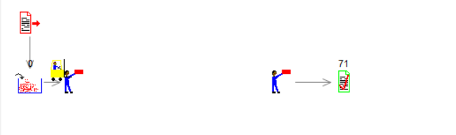
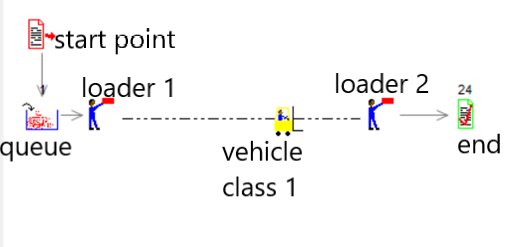
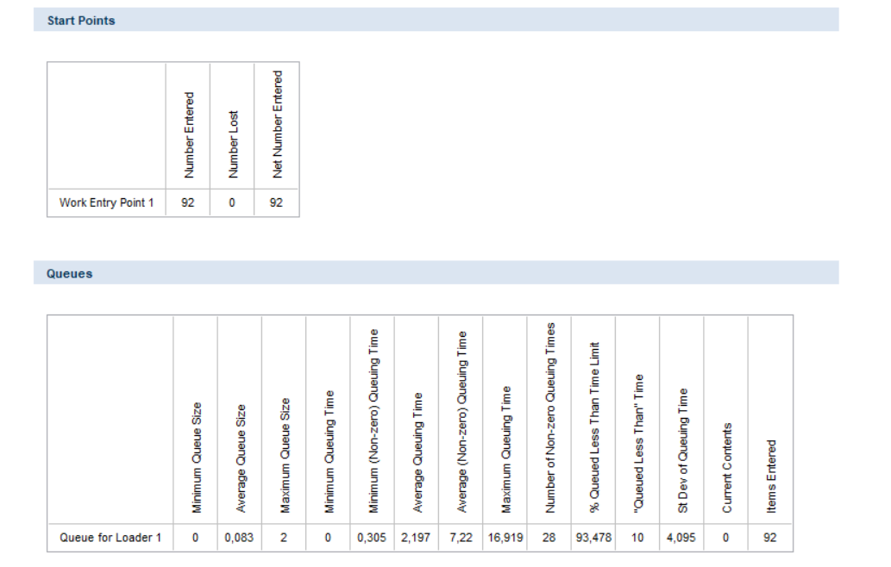
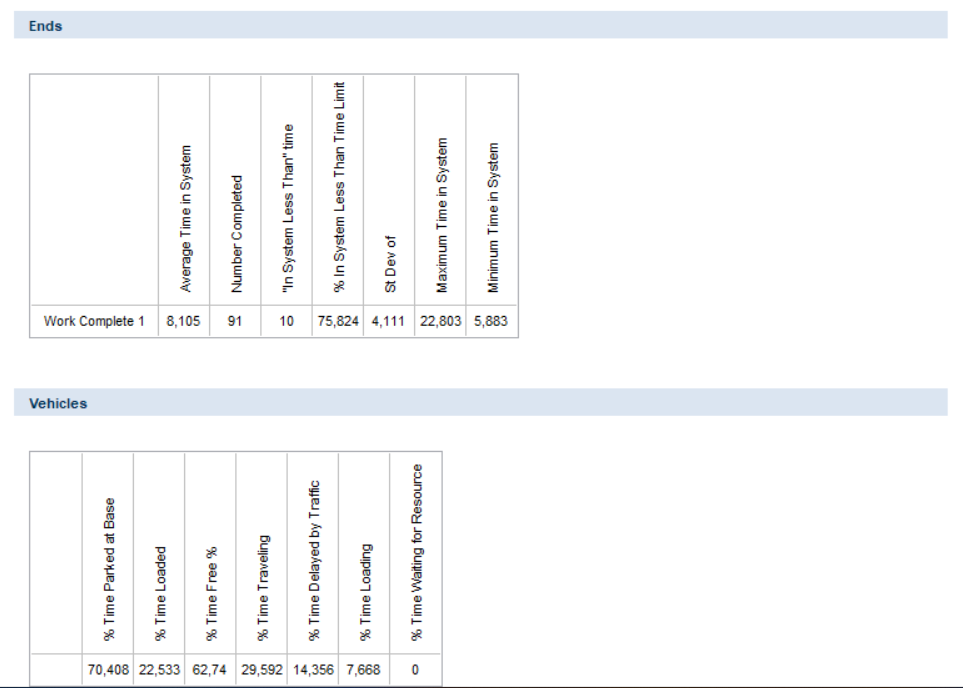

Ejemplo Practico (SIMUL8)
check_box Ejemplo basico:
Simula un ejemplo de transporte de cajas donde hay un camion y dos cargadores de cajas que realizan la actividad consecutivamente.
Simulacion completada:
Simulacion con iconos definidos
Descripcion:
- Se inserta un "Start Point o punto de inicio" donde la Distribucion: Exponencial y Average: 30.
- Se inserta un "Queue for Loader 1 o cola para cargador" donde la Capacidad: infinite y Duracion:none.
- Se inserta un "Loader 1 o cargador 1" donde la red(sendero): Path 1 , Distancia:2 metros , Cargando: 2 , Cantidad maxima: 10000 , en vehiculos asociar al vehiculo de transporte creado.
- Se inserta un "Vehicle Class 1 o clase de vehiculo 1" donde numero de vehiculos:1, capacidad de vehiculo:1, velocidad del vehiculo:1, ancho del vehiculo:2, largo del vehiculo:1, red de ruta:Path Network 1(red de ruta 1), punto de estacionamiento: Loader 1 .
- Se inserta un "Loader 2 o cargador 2" donde la la red(sendero): Path 1, posicion en el sendero:20metros, distancia del camino:2metros, Cantidad maxima: 10000 , en vehiculos asociar al vehiculo de transporte creado.
- Se inserta un "End o trabajo completo 1".
Proceso de simulacion ejecutado:

Resultados:
